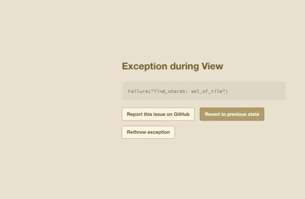

Hazel reports · report 041 · livelits · started 2026-11-04, updated {{updated}} MST · work in progress · after report 037 (idea 8)
Idea 8 on the agenda for today's meeting (^report(37)): a livelit whose literal is a grammar, toward DSLs in Hazel as tile-based livelits. Matthew asked for a prototype, with a branch and a PR, built on livelits × modular editors (#2635). He framed the model as a production rule system: production rules, in a certain order, and started with the rules for IMP. Asked 2026-11-04 (^ticket(684)). Pictures are added as the branch's builds come in.
Where it stands.
Built: a slide, Livelit Playground / Grammar: IMP, on draft #2806 into #2635's branch. Its livelit's model is IMP's rules, in order, and each rule's alternatives, in order.
Each alternative is edited as a line of words and drawn beside its box as chips, one color per rule. Buttons move an alternative or a rule up, add an alternative, or drop one.
The expansion is the grammar itself, a Hazel value. The rest of the slide's program reads it. For each alternative of Cmd, the program writes the first sentence that alternative derives, trying alternatives in their order. So the order in the model shows up in the result.
Tried in the branch's build: it draws, and a reorder updates the model; the app then crashed, because the click put the caret on the livelit while the explainer's highlighting was on: the explainer asked where the livelit's name and model are drawn, and they are not drawn, the widget is. Any livelit does it. Fixed on #2806 (903578653c), and checked: a reorder now changes the examples (Pictures). Pictures.
Next: a parser built at run time, so that programs written in the grammar's language can be read. Then a second livelit that edits those programs as tiles, with the parse tree as its expansion.
Cyrus's question, brought back for today: a new kind of livelit for languages defined inside Hazel. The literal is a Hazel datatype describing a context-free grammar. The livelit presents an editor for those production rules, and a parser reads the grammar behind the scenes. Hazel's own tiles come from a fixed table of forms in its source (src/haz3lcore/lang/Form.re). Here the grammar would be a value that a program writes.
Matthew's framing sets the model: the rules, in order. The order matters because a parser that tries alternatives in turn reads it, as a PEG's ordered choice does. It can also say which reading wins when two alternatives both match.
As Matthew gave them:
Var ::= <ids>
Cmd ::= Cmd1 ; Cmd2
| Var := Exp
| while Exp do { Cmd }
| if Exp then Cmd1 else Cmd2
Exp ::= Var | Var + Var | Var < Var
As the livelit's model, a Hazel value. A symbol is a terminal T, a nonterminal N, or Ids, any identifier. The numbering in Cmd1 ; Cmd2 is notation for two uses of one rule, so both are N("Cmd"):
type Sym = + T(String) + N(String) + Ids in
type Alt = [Sym] in
type Rule = (lhs = String, alts = [Alt]) in
type Grammar = [Rule] in
^^livelit(^grammar([
(lhs = "Var", alts = [[Ids]]),
(lhs = "Cmd", alts = [
[N("Cmd"), T(";"), N("Cmd")],
[N("Var"), T(":="), N("Exp")],
[T("while"), N("Exp"), T("do"), T("{"), N("Cmd"), T("}")],
[T("if"), N("Exp"), T("then"), N("Cmd"), T("else"), N("Cmd")]]),
(lhs = "Exp", alts = [
[N("Var")],
[N("Var"), T("+"), N("Var")],
[N("Var"), T("<"), N("Var")]])
]))
Model: Grammar, as above, and nothing else. The livelit keeps no state of its own beyond the rules.
View: one row per alternative. The first row of each rule has the rule's name and ::=, and the later rows have |. Each row has a text box with the alternative's words. Beside the box, the alternative is drawn as chips: a nonterminal in its rule's color, a terminal in bold, and the identifiers in italics. A nonterminal used twice in one alternative is numbered, as Cmd1 ; Cmd2.
Reading a box: words are separated by spaces. A rule's name is that nonterminal, and so is a rule's name followed by a digit (Cmd1). The word <ids> stands for the identifiers, and any other word is a terminal. Each keystroke previews the new grammar, and the change commits when the box loses focus. That is how #2635 commits any livelit's input.
Update: move an alternative up, move a rule up, set an alternative from its text, add an empty alternative, or drop one.
Expansion: Functional, the grammar itself.
The program after the livelit uses the expansion. For each alternative of Cmd, it writes the first sentence that alternative derives within a depth of 3, trying each rule's alternatives in their order:
["x := x ; x := x", "x := x", "while x do { x := x }", "if x then x := x else x := x"]
Move Var + Var above Var in Exp, and every x := x becomes x := x + x. That is the order in the model, at work in the result.
From #2806's branch build on GitHub (livelit-dsl-grammar@5807661), in the app's browser pane. The outline and the side panel are closed to make room.

Var + Var: Exp now reads Var + Var | Var | Var < Var. The click's update ran and the new model was written into the program. Each row ends in up and drop buttons, and up is greyed out on a rule's first alternative.Found by that click: a crash, not in the livelit's code. Right after the new model was written, the app stopped with Exception during View: Failure("find_shards: sel_of_tile") (Figure 3). The cause, found: the click put the caret on the livelit, and the explainer's highlighting was on. With the caret on a livelit, the explainer's "Livelit application" entry colors the livelit's name and its model in the code. Both sit under the projector, which draws its widget in their place, so their tiles have no layout, and asking for one's position failed the whole view. It happens with any livelit, whenever the explainer's highlighting is on; the reorder had nothing to do with it. A diagnostic build (trial/2806-highlight) skipped such tiles and logged which decoration asked: color, for ^grammar and its [ ]. The fix (903578653c, on #2806; for #2635 itself, PR #2810): the explainer's color colors a term only when its tiles are laid out. Dev has the same lookup in the same function, so it likely has the same bug for any projector the explainer colors under; not checked there.
Checked with the fix in (GitHub's build of 903578653c, highlighting on): the caret sits on the livelit, and the explainer shows "Livelit application" with no crash. Clicking up on Var + Var reorders Exp, and the examples follow the new order: x := x + x ; x := x + x, x := x + x, while x + x do { x := x + x }, if x + x then x := x + x else x := x + x. The examples that did not change after the crash were stale from the revert, not a livelit bug.
The console also logged "unrecognized attribute: Value" ten times: an input's value that was not a string when the view was drawn. The text boxes still showed their text, so it was probably drawn while a value was not finished yet. Not yet known.

A parser at run time. Menhir generates its parser when Hazel is built, so it cannot read a grammar written in a running program. Three options: an Earley parser, which takes any context-free grammar and could be written in Hazel itself; tables built in the browser; or compiling the grammars of built-in DSLs ahead of time.
Programs in the language, as tiles. A second livelit whose literal is a program in the grammar's language. Its view would be tiles shaped by the grammar's rules, and its expansion the parse tree as a Hazel value. Hazel cannot make a new datatype at run time, so the tree would be generic, perhaps + Node(String, Int, [Tree]) + Leaf(String): a rule's name, which alternative, and the children.
The language boxes question (#2542): Eco's language boxes give each box its own lexer and parser, so a box is one token to its parent. A grammar livelit is a natural place to try that.
Is this the shape Cyrus has in mind: the grammar as an ordered list of rules, in a livelit?
Should the order mean ordered choice (PEG), or only presentation, with ambiguity reported?
Grammars at run time (an Earley parser), or ahead of time for built-in DSLs only?
The slide is hazel-programs/docs/livelits/playground/grammar-imp.hz on branch livelit-dsl-grammar (58076619f2), from #2635's branch at c079fa2e24. It was checked with the Hazel command line from a build of #2635's branch: analyze found no static errors, and run gave the four sentences above. The view and the buttons are not checked from the command line. They are checked in the branch's build on GitHub, which the pictures will show.